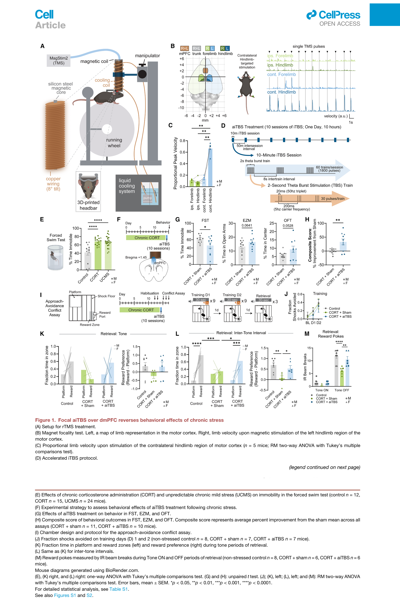
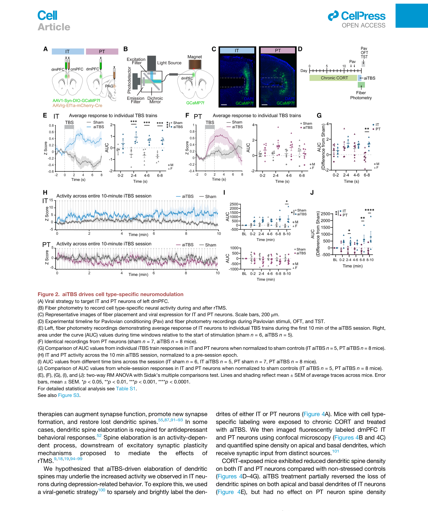
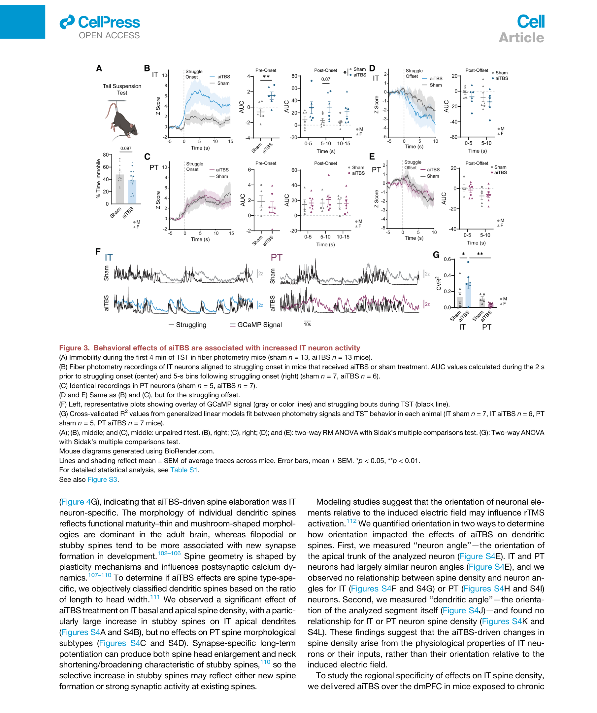
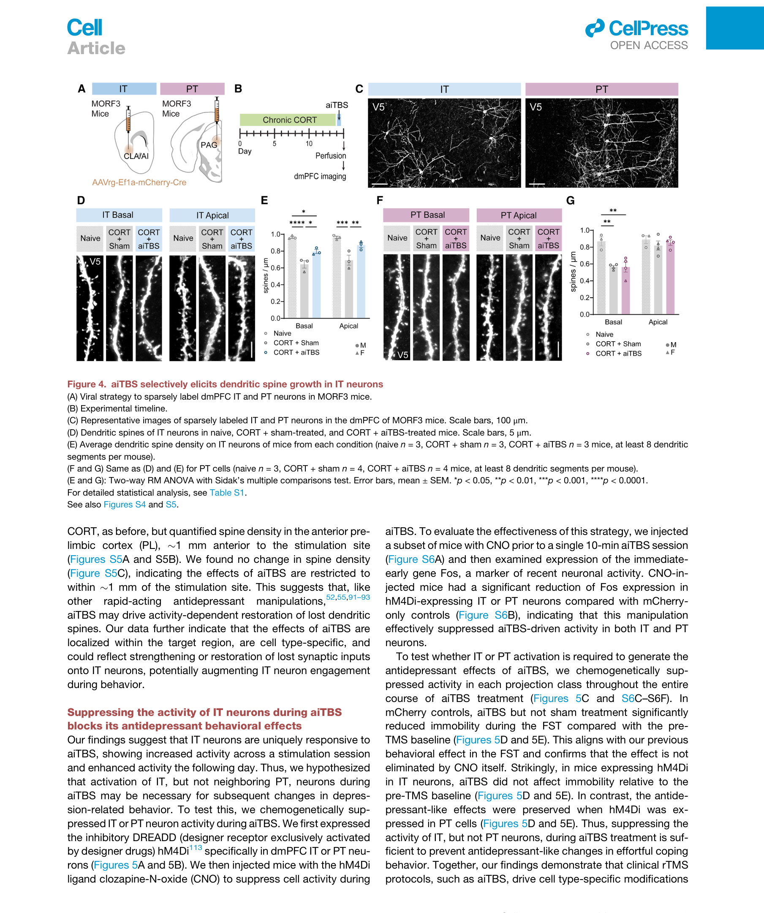
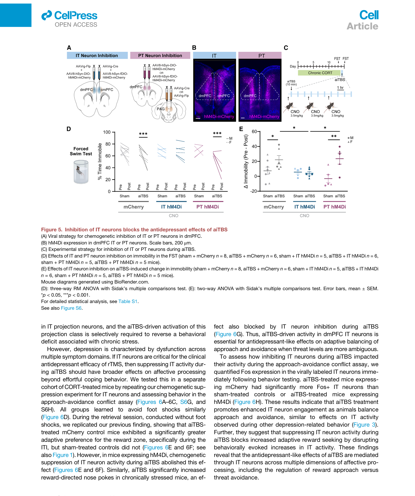
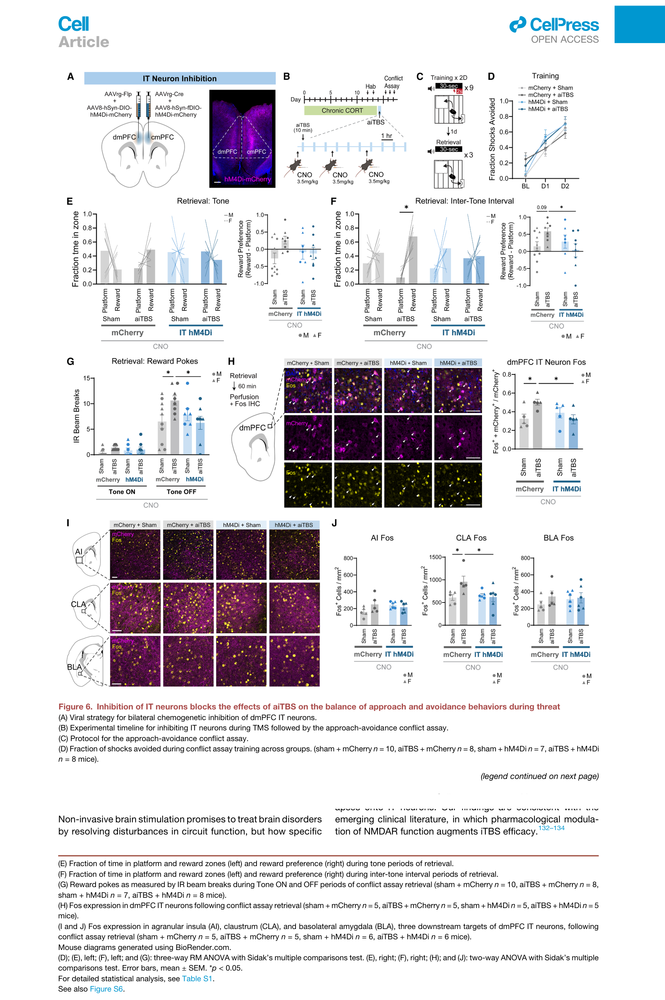
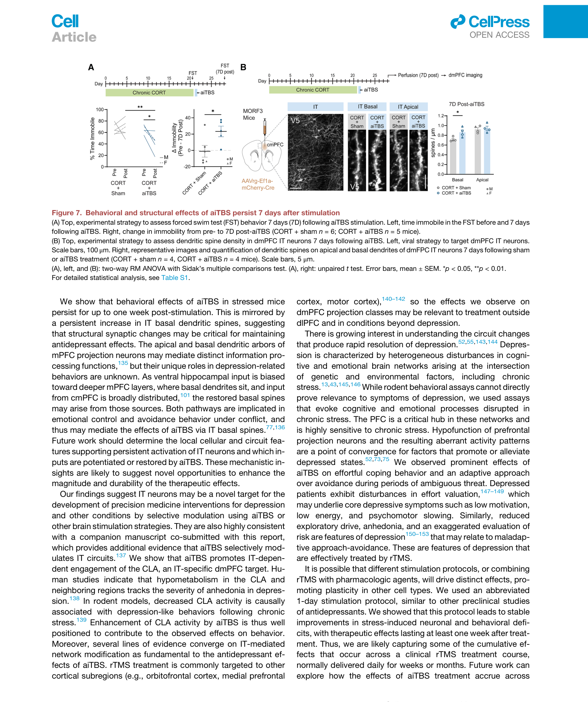

论文精读说明文档
A cell type-specific mechanism driving the rapid antidepressant effects of transcranial magnetic stimulation
用清醒小鼠 focal rTMS + fiber photometry + 化学遗传，证明 aiTBS 抗抑郁效应通过 dmPFC 中的 IT（intratelencephalic）投射神经元起作用——PT 神经元不参与。
论文信息
Cell - 2026 - Gongwer - …transcranial magnetic stimulation.pdf
一句话定位
rTMS 临床上能快速缓解抑郁，过去几十年没人知道"它到底改变了哪种神经元"。这篇文章给了第一个细胞类型分辨的答案：把临床 SAINT aiTBS 协议（5 天压成 1 天的高强度 iTBS）打到小鼠 dmPFC 上，只有 IT（投射到对侧 PFC、皮层、纹状体）这一类锥体神经元被持续激活、树突棘被修复；如果在 aiTBS 期间化学遗传抑制 IT，抗抑郁效应完全消失；抑制 PT（投射到中脑、脑干）则毫无影响。下游环路落在屏状核（claustrum, CLA），效应持续 7 天。
为什么值得读
1. 第一次给 rTMS 治疗机制画出了"细胞类型分辨率"
以前关于 rTMS 机制的研究只能说"它引起 LTP/LTD 样可塑性"或"它影响 PFC 活动"，但 PFC 里有几十种细胞类型，到底是哪些被改变没人答得出来。这篇用 fiber photometry + 病毒标记 + 化学遗传三件套，把答案锁在 IT 投射神经元身上，并且用 loss-of-function 实验封顶为因果关系。
2. 小鼠 rTMS 模型 face validity 极高
过去的小鼠 rTMS 实验通常违反临床场景的几个关键约束：要么用麻醉小鼠（rTMS 在麻醉下的效应可能和清醒相反），要么线圈太大刺激了大半个脑（破坏 focality），要么强度不到激活阈值。作者用前期发表的小型水冷线圈解决了这些问题，focal < 2 mm、suprathreshold、清醒头固定、临床原始 SAINT 协议，四个约束同时满足，这在小鼠 rTMS 文献里是史无前例的。
3. "几何无法解释 IT/PT 差异"是个非常硬的反证
一个常见解释会是"PT 锥体细胞和电场方向不平行所以激活效率低"。作者用神经元角度、树突段角度两套几何参数做了详细相关分析，都没有显著相关（Fig S4E–S4L）。这把解释空间挤压到了"细胞内禀性质 + 局部输入差异"——这是后续机制研究（以及对你研究的启示）的真正悬念。
4. 配套 NMDAR 假说提供了清晰的下一步
Discussion 引用临床证据（pharmacological NMDAR modulation 能增强 iTBS 疗效），结合体外 LTP 机制（NMDAR + Ca²⁺ + intertrain interval 持续 plateau），给出可检验假说：aiTBS 在 IT 神经元上产生的"train 后持续 8 秒去极化"是钙通过 NMDAR 进入并触发突触增强的物理基础。
术语先说明
图文导读
Figure 1 · 搭一套 focal 小鼠 rTMS 平台 + 复现抗抑郁行为
前置工程：用前期开发的水冷小型线圈实现 focal < 2 mm 的清醒小鼠 rTMS；以 motor cortex 后肢区的单脉冲诱发肢体抽动作为 focality 验证。CORT/UCMS 模型稳定诱发 FST 不动时间增加。1 天 10-session aiTBS 显著降 FST 不动，复合行为评分改善；approach-avoidance conflict 任务里选择性恢复 ITI（低威胁）期的奖励驱动，而 tone（高威胁）期回避不变。把线圈挪到 M1 → 无效——证实区域特异性。

A：实验装置（水冷线圈 + 3 轴定位器 + 头固定 + 跑轮）；B–C：focality 验证；D：aiTBS 协议（1 天内 10 个 session，间隔 50 min）；E：CORT 和 UCMS 都增加 FST 不动；F–H：aiTBS 显著降低 FST 不动、提升复合评分；I–M：approach-avoidance conflict 任务里选择性恢复 ITI 期的奖励偏好和 reward poke 数量。
Figure 2 · aiTBS 期间 IT 和 PT 神经元的活动差异是核心物理观察
用 AAVrg-Cre 逆行病毒分别标记 IT（投 cmPFC）和 PT（投 PAG），dmPFC 局部表达 GCaMP7f，斜向侧插光纤避开线圈。记录第一个 10-min iTBS session 期间的钙信号。把活动对齐到每个 2-s TBS 簇 onset → IT 在 train 后持续升高 8 秒；PT 在 train 内升高、train 结束立即回落甚至低于 baseline。看整个 10-min 累积：IT 累积上扬，PT 反向。

A：AAVrg 逆行病毒策略；B–C：侧向光纤植入 + 病毒表达验证；D：实验时间线；E：IT 在 TBS 后维持升高 8 秒；F：PT 在 TBS 结束立即回落；G：对 sham normalize 后 IT 显著高于 PT；H–J：整个 10 分钟 session IT 累积升高、PT 反向。
Figure 3 · aiTBS 后第二天，IT 在挣扎行为中活动更强
aiTBS 后第二天做 TST，用 photometry 把活动对齐到挣扎 bout 开始/结束。IT 在挣扎 onset 前已有 ramping，onset 后持续 15 秒升高；PT 完全无变化。用 GLM 拟合"photometry 信号 vs 挣扎 vigor"，aiTBS 让 IT 的 R² 显著抬升、PT 不变。OFT 和 Pavlovian 奖励/厌恶任务里 IT 都没变——aiTBS 不是"全局抬升 IT"，而是行为状态依赖地增强 IT 招募。

A：TST immobility；B：IT 挣扎 onset 对齐显著升高；C：PT 同分析无效；D–E：挣扎 offset 都无效；F–G：GLM 拟合 photometry vs 挣扎 vigor，aiTBS 选择性提升 IT 的相关性。
Figure 4 · aiTBS 选择性修复 IT（不动 PT）的树突棘损失
MORF3 稀疏标记 + AAVrg-Cre 限定到 IT 或 PT，共聚焦量化 apical 和 basal 棘密度。CORT 让 IT 和 PT 棘密度都下降；aiTBS 只在 IT 上部分恢复（apical 和 basal 都有效），PT 完全无变化。stubby（短粗）棘是主要增加的类型。神经元/树突段几何取向都和棘变化无相关——再次反证"取向不是 IT/PT 差异的来源"。区域对照：把量化挪到刺激位点前方 1 mm 的 anterior PL → 无变化，棘修复局限在 < 1 mm。

A：MORF3 稀疏标记 + AAVrg-Cre 限定 IT/PT；B：时间线；C：代表性 confocal 图；D–E：IT 棘密度 naive vs CORT+sham vs CORT+aiTBS 显著恢复（apical + basal）；F–G：PT 无任何变化。
Figure 5 · 化学遗传抑制 IT 在 aiTBS 期间，抗抑郁效应完全消失
把 hM4Di 限定到 IT 或 PT，在 aiTBS 期间注射 CNO 抑制活动。mCherry 对照里 aiTBS 仍然降 FST 不动（说明 CNO 本身不干扰）；IT-hM4Di + aiTBS 组里 FST 不动时间和 sham 完全一样——抗抑郁效应被打到 0；PT-hM4Di + aiTBS 组效应完全保留。这是全文 causality 的关键证据。

A：化学遗传策略；B：hM4Di 在 IT/PT 中的表达；C：时间线；D：FST 不动时间，IT-hM4Di 组 aiTBS 失效；E：aiTBS 引起的不动时间变化在 IT-hM4Di 中归零。
Figure 6 · 行为效应扩展到 reward-threat 决策，下游网络落在 CLA
重复化学遗传抑制 IT，但行为切到 approach-avoidance conflict assay。aiTBS 显著抬升 ITI 期的奖励驱动；IT-hM4Di 把它压回 sham 水平。Fos 染色查 IT 的下游靶（AI / CLA / BLA），只有 CLA 在 aiTBS 后 Fos 显著升高，并且 IT-hM4Di 把 CLA 的升高也压下去。说明 aiTBS → dmPFC IT → CLA 是核心环路；BLA（情绪杏仁核）反而没被招募。

A–C：双侧 IT 化学遗传抑制 + conflict assay；D：训练期 shock avoidance 三组都正常学会；E–G：retrieval 期 aiTBS 提升 reward 偏好，IT-hM4Di 失效；H：dmPFC IT 自身 Fos：aiTBS↑ → IT-hM4Di 压回；I–J：下游 AI/CLA/BLA Fos 中只有 CLA 被选择性招募。
Figure 7 · 行为和 IT basal 棘的修复持续 7 天
aiTBS 一次（1 天 10 session）后第 7 天再测 FST：不动时间仍然显著低于 sham；IT basal 棘密度仍然高；apical 棘 7 天后差异不再显著。basal 棘是更稳定的结构记忆载体——它接收来自 ventral hippocampus、对侧 PFC 等深层输入，是作者推测的"长期抗抑郁效应物质载体"。

A：7 天后 FST 不动仍显著降低；B：IT basal 棘密度持续升高，apical 棘衰退到 baseline。
证据链结构
整篇文章的论证逻辑是层层加码、最后用 loss-of-function 封顶：
| 层次 | 问题 | 方法 | 结论 |
|---|---|---|---|
| 1 | 小鼠 rTMS 能否复现临床效应？ | focal < 2 mm 水冷线圈 + CORT/UCMS 模型 + 行为学组合 | aiTBS 显著改善 FST、composite、conflict assay 中的 reward 驱动 |
| 2 | aiTBS 在皮层哪类细胞上起效？ | AAVrg-Cre + GCaMP + fiber photometry 比较 IT vs PT | IT 在 TBS 后持续升高 8 秒；PT 立即回落甚至下降 |
| 3 | 这种细胞类型差异在行为里也有吗？ | aiTBS 后 TST 的 photometry，GLM 拟合活动 vs 挣扎 | IT 挣扎相关性显著抬升，PT 不变；OFT 和奖励刺激都无效 |
| 4 | 结构上也有差异吗？ | MORF3 稀疏标记 + 共聚焦量化 spine | IT 棘 partial rescue（apical + basal），PT 完全无变化 |
| 5 | IT 活动是不是必要的（causality）？ | hM4Di + CNO 在 aiTBS 期间抑制 IT 或 PT | 抑制 IT → 抗抑郁效应消失；抑制 PT → 效应完整保留 |
| 6 | 下游环路落在哪？ | Fos IHC 量化 AI / CLA / BLA | 只有 CLA 被 aiTBS 选择性招募，且依赖 IT 活动 |
| 7 | 效应能持续多久？ | aiTBS 后第 7 天复测 FST + spine | FST 行为和 IT basal 棘都持续 7 天 |
和你的研究怎么接上
1. 同一个底层物理：电场驱动跨膜去极化
你做 EFS（extracellular field stimulation） + patch-clamp，他们做 TMS（磁感应诱导电场） + fiber photometry。表面看一个是"电"一个是"磁"，但实际作用机制都是电场在细胞膜上诱导跨膜电压。区别只在尺度：
| 维度 | 你的 EFS 实验 | 他们的 rTMS 实验 |
|---|---|---|
| 诱导方式 | 双电极直接施加电流 | 磁场诱导电场（涡流） |
| 场强量级 | ~10 V/m（脑片局部） | ~100 V/m（皮层局部） |
| 脉冲宽度 | 100 μs – 10 ms | ~100 μs（单脉冲） |
| 时序模式 | 单脉冲或脉冲串扫描 | iTBS：5 Hz × 50 Hz 簇 |
| 记录尺度 | 单细胞、亚毫秒 Vm | 群体钙信号、~10 ms |
| 主要变量 | 脉宽、幅度、极性 | focal、suprathreshold、协议 |
2. "几何不能解释 IT/PT 差异"= 你正好能回答的问题
作者在 Fig S4E–S4L 用神经元角度、树突角度做了相关分析，都没找到 IT/PT 差异的几何解释。这意味着差异必然来自细胞内禀性质（$R_m$、$C_m$、Ih 通道密度、被动电学）或突触整合差异。这恰好是你能用差分测量 $V_m = V_i - V_e$ 在脑片上直接回答的问题：
- 在 IT 和 PT 神经元上分别做同等强度 EFS，实测的 $V_m$ 时程到底差多少？
- "持续 8 秒后去极化"在你的电路模型里对应什么——是 plateau potential？NMDAR 后电流？局部网络 reverberation？
- 你的等效电路模型（$R_m C_m$ → 时间常数 10–50 ms）和 8 秒持续不匹配——这是必然要补充"活跃机制"的暗示。
3. 你的 IEEE TIM 论文可以引用的角度
这是 2026 年 5 月新发的 Cell，可在 Discussion 里引用作为：
- 细胞类型差异是 EFS/rTMS 效果异质性来源之一的高强度证据——补强你已经在用的 Radman 2009（cortical cell type/morphology in uniform EFS），形成"离体单细胞场反应 → 在体细胞类型分辨临床机制"的引文链。
- "先搭最小可行模型再做发现"的写作范式——他们 Fig 1 完全是工具搭建+复现现象，第 2 层才进入机制。这和你"先建差分测量框架，再做 EFS 物理测量"是同构的论证结构。
- 测量技术互补性论证——光学方法（GCaMP/photometry）的优势是行为状态依赖，电学方法（patch-clamp/差分测量）的优势是单细胞精度和直接 $V_m$ 测量。两者结合是未来的发力方向。
4. 公众号选题候选
这篇 Cell 2026 是"细胞类型分辨临床机制"的标志性工作，可以做一期面向工科背景读者的科普："经颅磁刺激抗抑郁，到底改变了脑里的哪种细胞？"，把 IT/PT 投射类型、photometry vs patch-clamp 互补性、电场驱动的物理统一性串起来，连接你已经发的 patch-clamp 系列推文。
局限与未解之谜
方法学局限
- fiber photometry 是群体平均，无法区分"更多 IT 细胞被招募"还是"同一群 IT 更强放电"。要双光子或 in vivo patch 才能分清。
- 样本量普遍偏小（n=3–8 mice/group）。结构实验里 n=3 mice + 多段树突的设计虽然规避了部分伪复制，但仍偏小。
- CORT 应激模型 ≠ 临床抑郁。作者在 Limitations 自己承认这点。
机制留白
- 没有 patch-clamp 验证 IT/PT 内禀差异。作者排除了几何解释，但没做电生理证实细胞内禀响应差异——这是你能补的窗口。
- 棘形态变化的分子层面没量化。只看了 stubby 增多，没做 PSD-95、SV2A、AMPA 受体定量。
- "train 后持续 8 秒"的离子机制不明。Discussion 推测和 NMDAR + Ca²⁺ + plateau potential 有关，但没直接验证。
- basal 棘修复是新生还是稳定？没用 in vivo 双光子做时间序列追踪。
建议阅读顺序
- 看 Fig 1A + Fig 1G：知道实验平台长什么样、抗抑郁效应有多强。
- 跳到 Fig 2E vs Fig 2F：理解 IT 和 PT "train 后余热"的核心差异。这是全文最关键的物理观察。
- 看 Fig 5D：化学遗传 loss-of-function 把相关性升级成因果。这是机制的封顶。
- 读 Discussion 第 1–2 段：作者自己的高站位总结。
- 有时间再回头看 Fig 4（结构）和 Fig 6（环路）：补充机制完整性。
- 关心 EFS/TMS 物理对照的话，重点读 Fig S4E–S4L（取向无关性的反证）和 Discussion 倒数第 3 段（NMDAR 假说）。
来源链接
- 论文 DOI：10.1016/j.cell.2025.12.040
- Cell 官方页面：cell.com/cell/fulltext/S0092-8674(25)01489-8
- 通讯作者实验室：DeNardo Lab（UCLA Physiology）/ Wilke Lab（UCLA Semel Institute）
- 本文配套数据：Star Methods 中的 Table S1 给出所有详细统计；Figures S1–S6 是 supplementary controls